Setting up email for a Custom Domain on a Windows Azure hosted website
The blog site you are currently on, jptacek.com, is using Windows Azure websites, which is a great way to quickly get a web presence up and running. The site also provides very low barrier to entry for setting up blogging engines or CMS applications. The one thing it does not do though is offer email services out of the box.
One way to remedy this is to use Google Apps to create a domain for hosting of email. I use Google Apps for my personal email for me and my family and it works great. In the hope of learning something new, I thought I would see what Microsoft has to offer in the space and see what setup was like.
In the Microsoft world, their Google Apps competitor is really Office 365. This is overkill for what I want, since I am just looking for email. It also costs money. Microsoft offers Custom Domains which allows us to use the Outlook.Com email service for our domain.
Steps for getting this setup
- Go to http://Domains.live.com. Note, you are going to want to use Chrome for this. The IE 10 browser looks awful
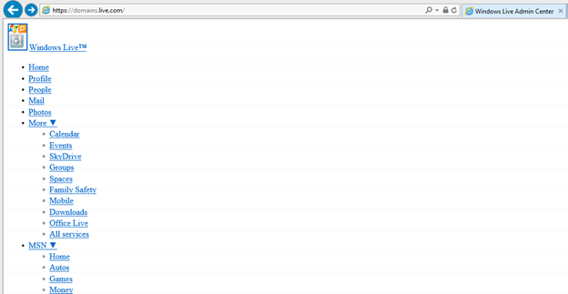
Versus Chrome
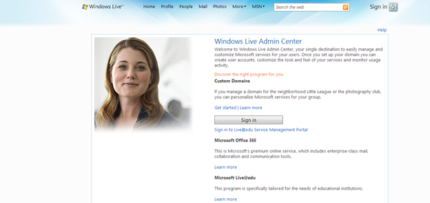
- Click the sign in button and use your Microsoft account and then click the Get Started link
Type in the custom domain you will want email for, in our case, jptacek.com. Make sure Set up Outlook.com is selected for your domain mail service, and then hit the continue button
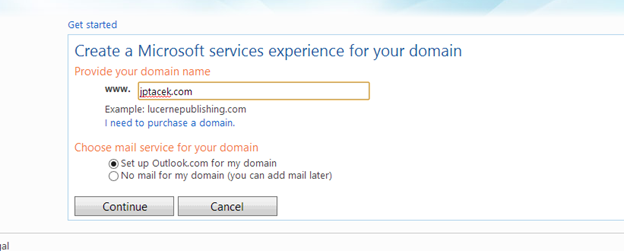You will then need to battle Microsoft's exceedingly unforgiving CAPTCHA system, after which you will be taken to the registration screen. The first step is to configure the MX record (MX is the DNS record used for mail)
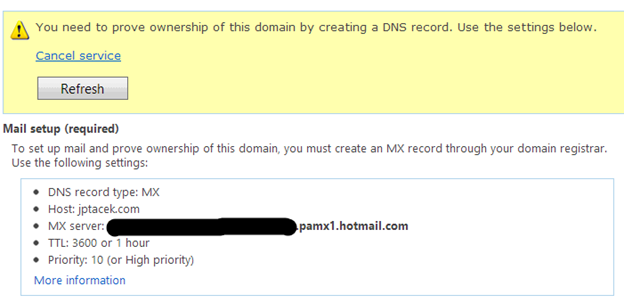- Log onto your DNS provider, in our case DNSImple.com, and add the record. This varies by DNS provider. IN the case on DNSimple, we go to the Advanced section, and choose Add a Record and select MX from the dropdown
Our next step is to create a server trust record as recommended on the admin screen. This is a TXT DNS record that helps verify our email address and helps prevent the email from the site from being marked as junk
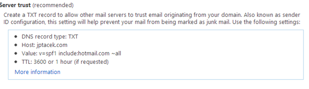- Next, we want a URL we can use to access our email. To do this, we create a CNAME record that points back to the Hotmail/Outlook . We will use mail, so mail.jptacek.com will be the URL we use when accessing email. You could use kwyjibo if you wanted to, just remember it J The CNAME record needs to point back to go.domains.live.com
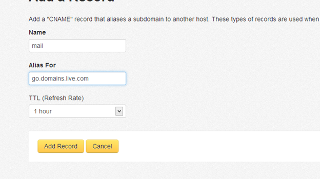
It can take up to 60 minutes for your domain to resolve, you can see if your domain records are updated by using your favorite command prompt and typing the commands
- nslookup -type=mx jptacek.com
- nslookup -type=txt jptacek.com
These should display values you entered earlier
Return to Domains.live.com and log in with your Microsoft account. It will show you the domains. In this step, the DNS configuration can take a while too
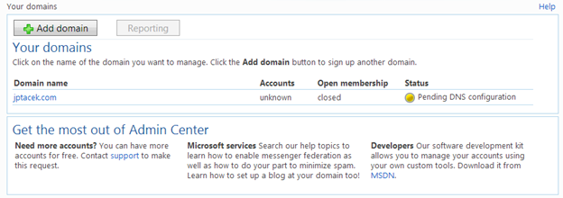- When your domain is active, you can add accounts, up to 50 of them. To do this click the domain name, and click the Add button for member accounts
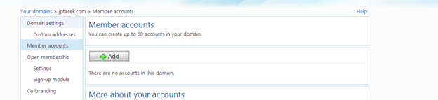
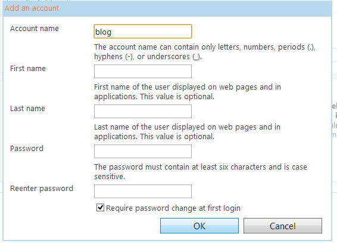Enter the account you want to create a long with a password
You are done! You can now go to newly created email site for your custom domain, and login with your user name.
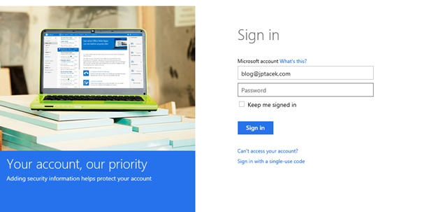
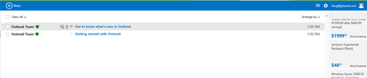
You can now email me at blog [@] jptacek.com
Update - May 27, 2014 Microsoft has announced that it will no longer support custom domains using Outlook.Com. As a
result, this content of this post is no longer valid. They
are encouraging customers to use Office 365 moving forward. You can find out more at domains.live.com